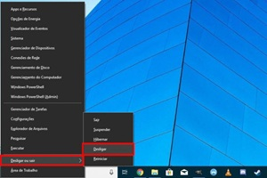
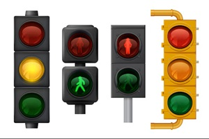
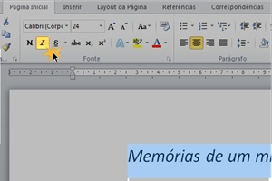
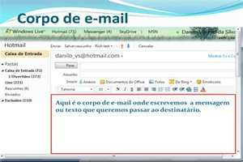

🎮 Atividades Criativas: Quiz Interativo de Conhecimento
1. Qual é o "Cérebro" do computador que o faz pensar e processar informações?
A) A CPU (Gabinete), que guarda os componentes principais.
B) O Mouse, que serve para clicar.
C) O Monitor, que mostra as imagens.
2. O que acontece quando você clica duas vezes no ícone de um programa?
A) O programa abre para que você possa usá-lo.
B) O ícone muda de cor.
C) O computador desliga automaticamente.
3. Se você digitou uma letra errada, qual tecla deve usar para APAGAR a letra?
A) Backspace (a tecla com uma seta grande para a esquerda).
B) Enter (a tecla para pular linha).
C) Shift (a tecla para fazer letra maiúscula).
4. Qual é o jeito mais seguro de desligar o computador para não estragar os arquivos?

A) Clicar no menu Iniciar, depois no botão de Energia e em "Desligar".
B) Puxar o fio da tomada ou da energia.
C) Apenas fechar a tela do notebook.
5. Para ter uma senha "super forte" e difícil de adivinhar, o que ela deve misturar?
A) Letras maiúsculas, minúsculas, números e símbolos especiais.
B) Apenas o seu nome e sua idade.
C) Apenas a palavra "senha123".
6. Se um arquivo for como um brinquedo, o que é a "Pasta" no computador?
A) Um cesto ou caixa para guardar e organizar os brinquedos do mesmo tipo.
B) Um lugar para esconder os brinquedos.
C) Um programa de desenho.
7. Qual é a principal função da Internet?
A) Conectar milhões de computadores e pessoas para trocar informações.
B) Apenas ligar a impressora.
C) Enviar mensagens de texto no celular.
8. Você está em um site estranho que pede seu nome completo e endereço. O que fazer?

A) Fechar o site e pedir ajuda a um adulto imediatamente.
B) Colocar informações falsas.
C) Digitar todas as informações, pois é importante.
9. Para encontrar rápido uma receita de bolo na internet, o que você deve escrever?
A) "Receita simples de bolo de chocolate".
B) "Comida doce para aniversário que é redonda".
C) "O que é internet?".
10. Qual é a regra mais importante antes de baixar qualquer arquivo ou foto?
A) Verificar se o site é confiável e conhecido.
B) Baixar o arquivo o mais rápido possível.
C) Mudar o nome do arquivo antes de baixar.
11. Na Regra de Ouro, o que você deve pensar antes de postar algo sobre outra pessoa?
A) Se você diria a mesma coisa para ela pessoalmente e com educação.
B) Se todos os seus amigos online vão gostar.
C) Se é algo que fará o seu post viralizar (ser visto por todos).
12. Qual função de formatação você usa para destacar uma palavra-chave no seu texto?

A) Negrito (geralmente com o botão B) ou Cor da Fonte.
B) Imprimir.
C) Mudar a cor do fundo da página.
13. Para que serve o campo "Assunto" no e-mail?

A) Resumir o que está escrito no e-mail para que a pessoa saiba antes de abrir.
B) Escrever a mensagem inteira.
C) Colocar o seu endereço de e-mail.
14. Se você quer um aplicativo novo para o seu celular, onde é o lugar mais seguro para encontrá-lo?
A) Na Loja Oficial do seu aparelho (Google Play ou App Store).
B) Em um link que alguém te mandou por mensagem.
C) Em um site que você nunca ouviu falar.
15. O que é importante fazer com a poeira para evitar que o PC fique muito lento e esquente?
A) Limpar o teclado, monitor e gabinete por fora com frequência.
B) Deixar o PC coberto por panos o tempo todo.
C) Colocar um copo de água ao lado do computador.
« Atividade Anterior
1 de 15
🏠 Painel
Próxima Atividade »